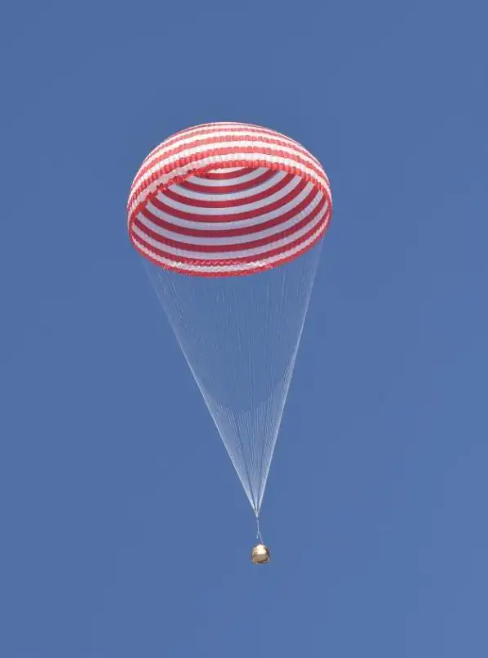
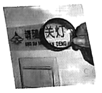
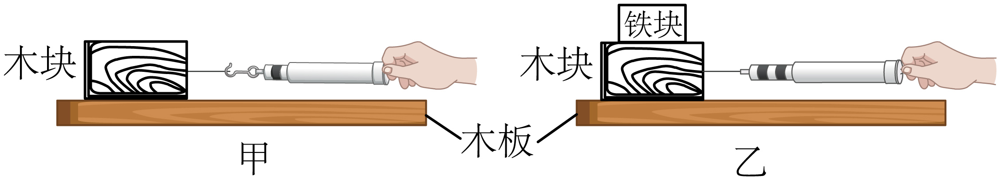
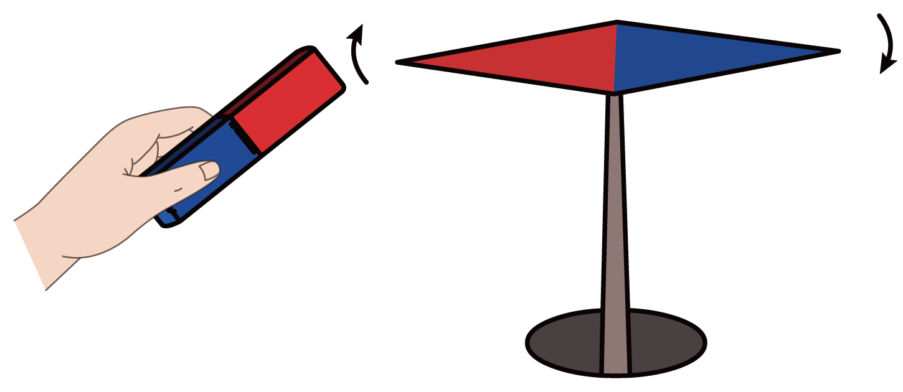
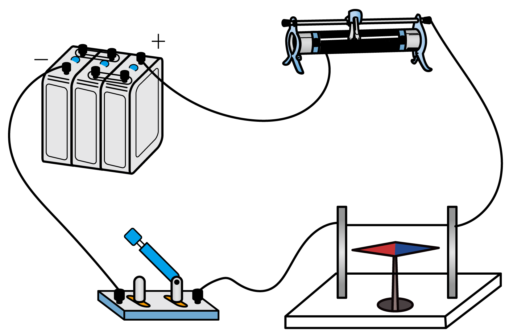
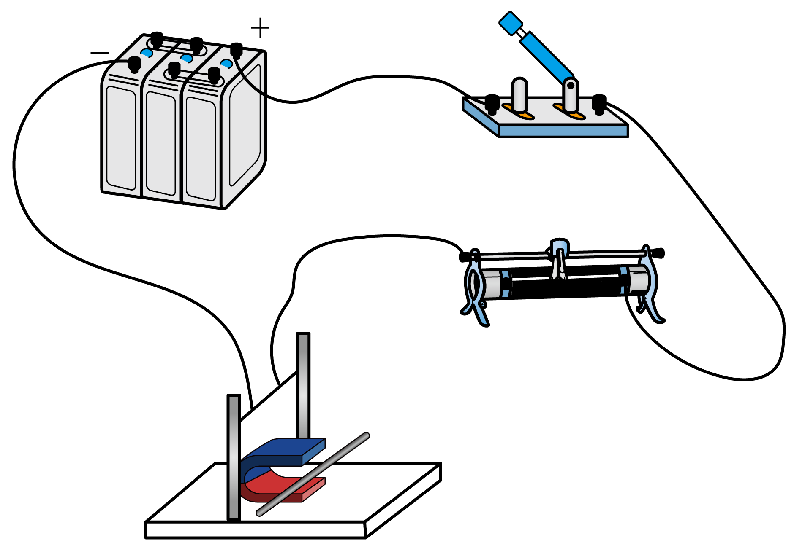
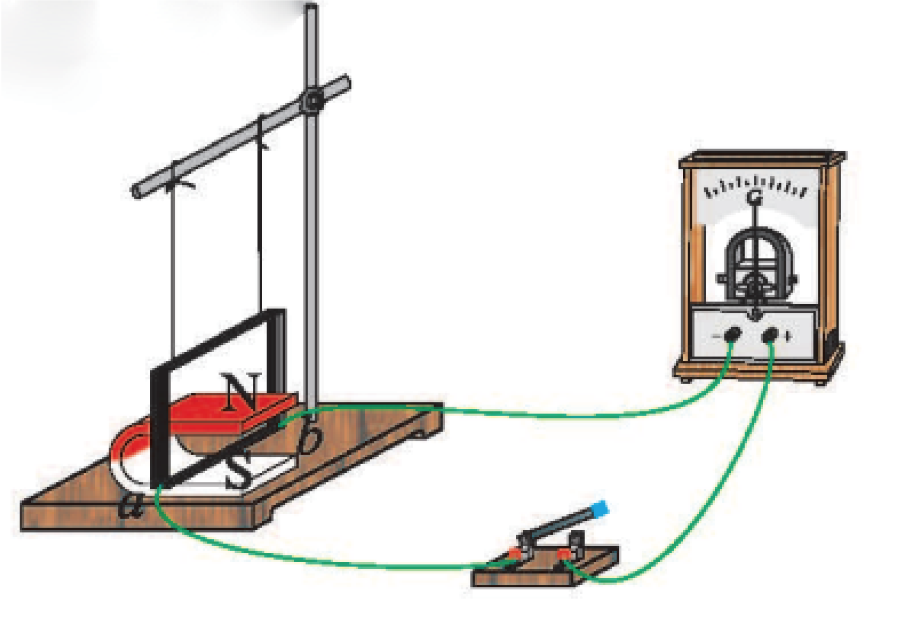

2022年北京市中考物理试题 · 选择题 第6、7、8、9、10题
6. 图所示的是神舟十三号载人飞船返回舱返回地面时的情境。打开降落伞后，若返回舱在一段时间内的运动可看作是竖直向下的匀速运动，则关于返回舱在这段时间内，下列说法正确的是（ ）

A. 返回舱的动能不变B. 返回舱的重力势能不变
C. 返回舱的机械能不变D. 返回舱所受重力不做功
7. 小京通过焦距为10cm的凸透镜看到了提示牌上“关灯”两字放大的像，如图所示。下列说法正确的是（ ）

A. “关灯”两字放大 像是实像
像是实像
B. 提示牌上“关灯”两字在凸透镜的焦点上
C. 提示牌上“关灯”两字到凸透镜的距离小于10cm
D. 提示牌上“关灯”两字到凸透镜的距离大于20cm
8. 图所示的是我国运动员在北京冬奥会上参加冰壶比赛时的情境。下列说法正确的是（ ）
A. 运动员推动冰壶滑行，以冰面为参照物冰壶是静止的
B. 掷出后的冰壶能继续运动，是由于冰壶具有惯性
C. 掷出后的冰壶继续运动时，冰壶受到手的推力
D. 冰壶运动越来越慢的过程中，冰壶的运动状态不变
9. 小京在探究影响滑动摩擦力大小的因素时，用弹簧测力计水平拉动木块沿水平木板做匀速直线运动，如图甲所示；将铁块放在木块上，再次用弹簧测力计水平拉动木块，使木块和铁块沿同一水平木板做匀速直线运动，如图乙所示。下列说法正确的是（ ）

A. 图甲所示实验中，弹簧测力计的示数小于滑动摩擦力的大小
B. 图乙所示实验中，木板受到的压力等于木块受到的重力
C. 甲、乙两次实验，探究的是滑动摩擦力的大小与压力是否有关
D. 甲、乙两次实验，探究的是滑动摩擦力的大小与接触面的粗糙程度是否有关
10. 如图所示的实验中能说明发电机工作原理的是（ ）
A.

磁极间有相互作用B.

通电导线周围存在磁场C.

通电导体在磁场中受力D.

电磁感应现象